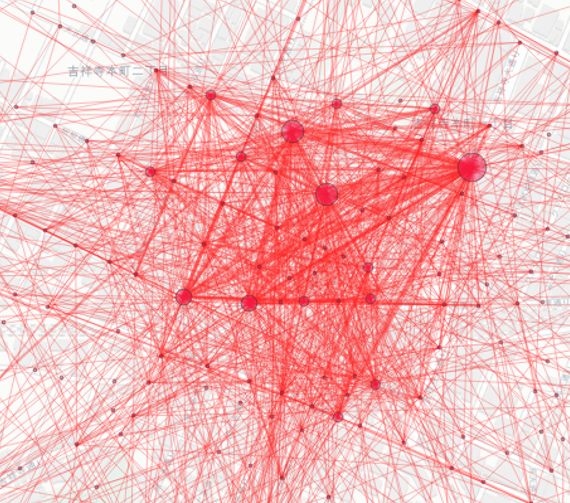
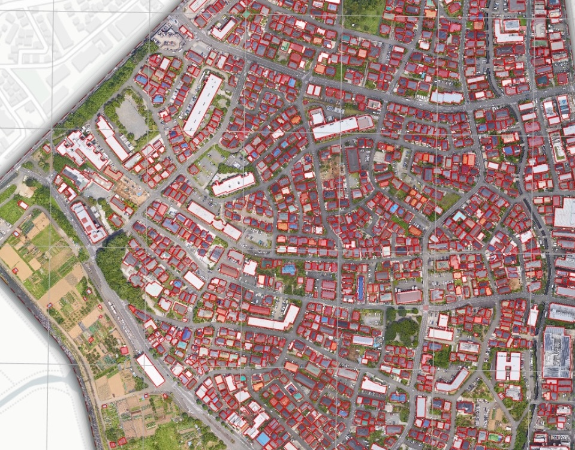
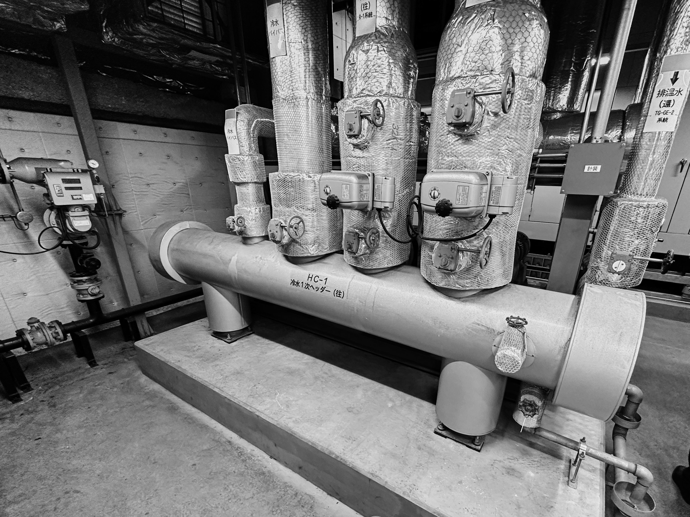
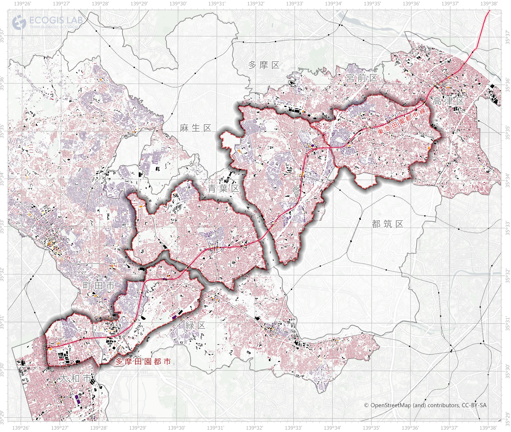
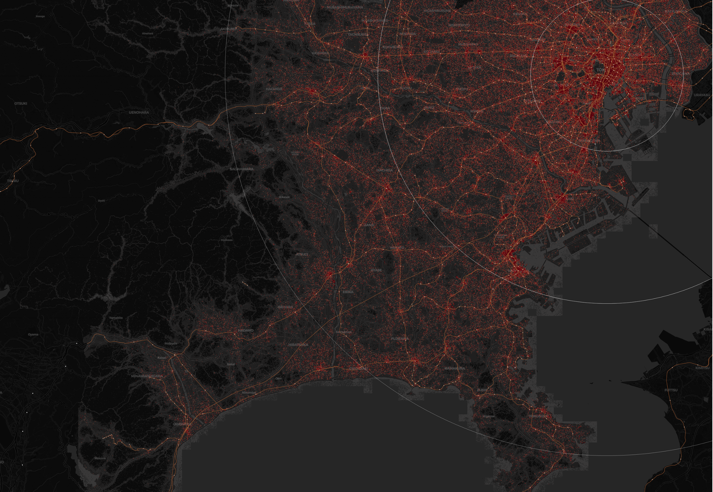
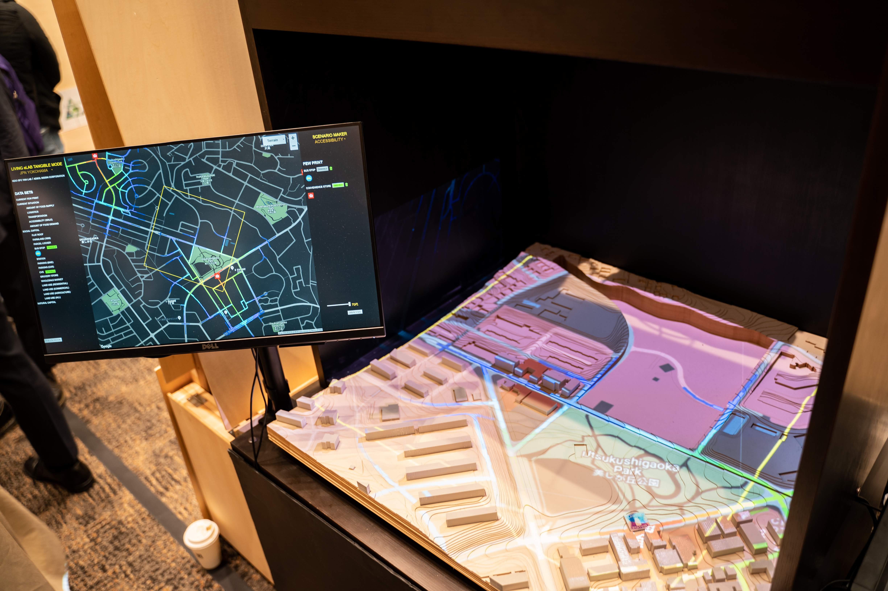

Research Project
Tangible GIS
Doctoral Dissertation
博士論文

スマート東京先進事例創出事業
デジタルエリアデザインの共創

Collaborative Research Project
横浜市地球温暖化対策推進協議会

Collaborative Research Project
JR東日本

Collaborative Research Project
日本総合研究所

Collaborative Research Project
東急総合研究所
Collaborative Research Project
東京建物

Collaborative Research Project
NTTデータ

Collaborative Research Project
アドソル日進
International Research Project